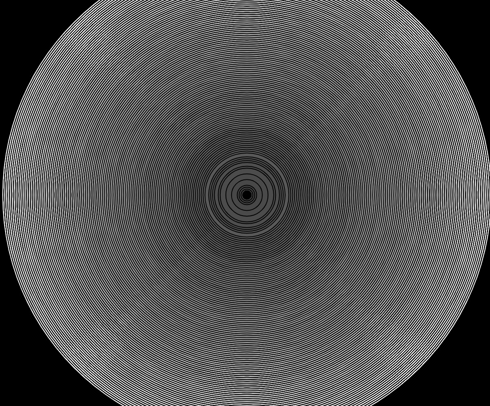
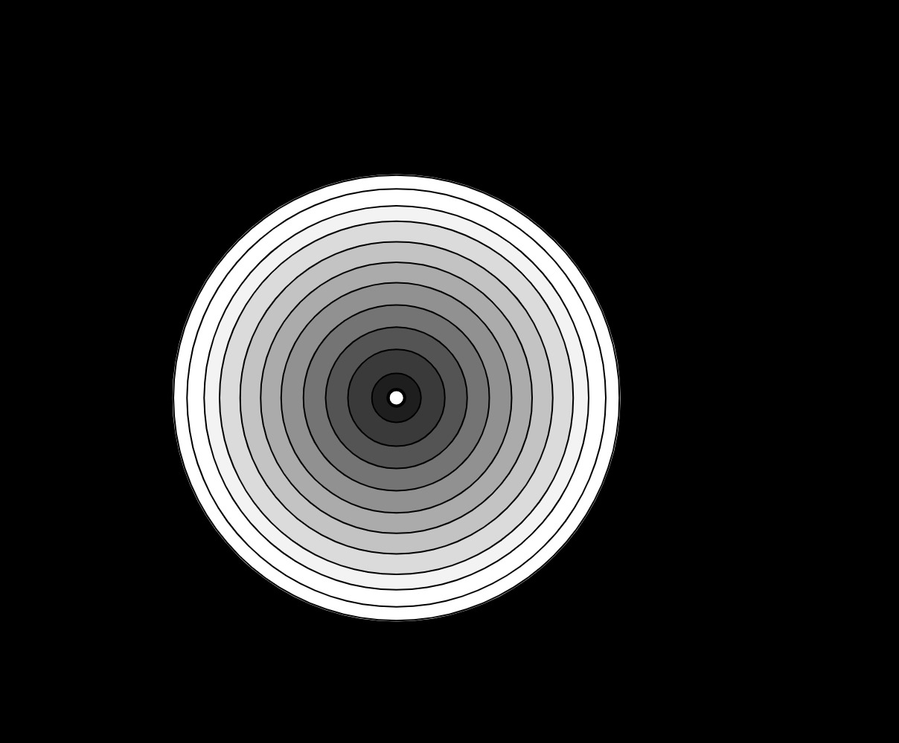

Midi controlled sketch
Select MIDI Input
I use the nanoKONTROL2 controller, with the first four sliders mapped to the canvas
Click on a device to connect to it
Sketch window
Sketch exports
- 
- 
I use the nanoKONTROL2 controller, with the first four sliders mapped to the canvas
Click on a device to connect to it